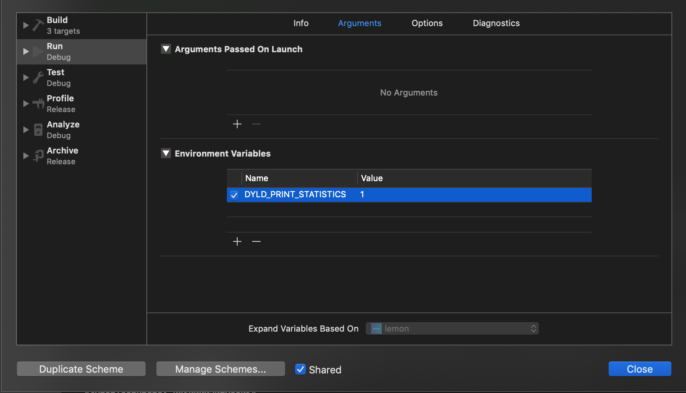
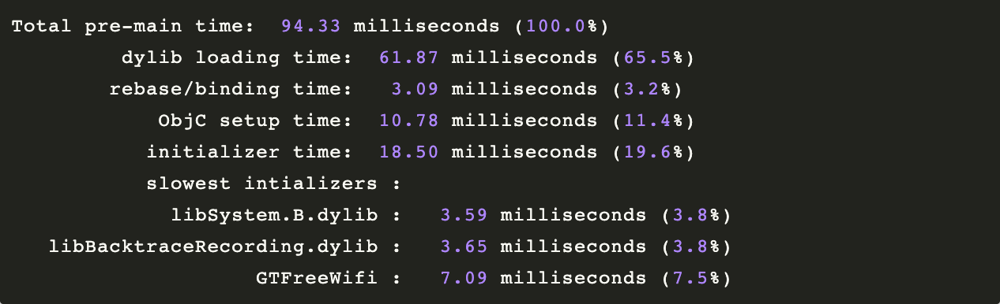

<!DOCTYPE html>
<html lang="zh">
<head><meta name="generator" content="Hexo 3.8.0">
    <meta charset="utf-8">
    
    <title>如何优化App的启动耗时？ | 静谧的夜空</title>
    <meta name="viewport" content="width=device-width, initial-scale=1, maximum-scale=1">
    <meta name="description" content="导语本文介绍了如何优化 iOS App 的启动性能，分为四个部分:  第一部分科普了一些和App启动性能相关的前置知识 第二部分主要讲如何定制启动性能的优化目标 第三部分通过具体项目的优化过程，分享一些有用的经验 第四部分是关键点的总结。  [第一部分] 一些小科普 因为篇幅的限制，没有办法很详尽的说明一些原理性的东西，只是方便大家了解哪些事情可能跟启动性能有关。同时，内容相对也比较入门，大神们请">
<meta name="keywords" content="性能优化">
<meta property="og:type" content="article">
<meta property="og:title" content="如何优化App的启动耗时？">
<meta property="og:url" content="http://lei-wen.cn/2019/03/27/如何优化App的启动耗时？/index.html">
<meta property="og:site_name" content="静谧的夜空">
<meta property="og:description" content="导语本文介绍了如何优化 iOS App 的启动性能，分为四个部分:  第一部分科普了一些和App启动性能相关的前置知识 第二部分主要讲如何定制启动性能的优化目标 第三部分通过具体项目的优化过程，分享一些有用的经验 第四部分是关键点的总结。  [第一部分] 一些小科普 因为篇幅的限制，没有办法很详尽的说明一些原理性的东西，只是方便大家了解哪些事情可能跟启动性能有关。同时，内容相对也比较入门，大神们请">
<meta property="og:locale" content="zh-Hans">
<meta property="og:image" content="http://lei-wen.cn/images/11.jpg">
<meta property="og:updated_time" content="2019-03-28T08:53:09.842Z">
<meta name="twitter:card" content="summary">
<meta name="twitter:title" content="如何优化App的启动耗时？">
<meta name="twitter:description" content="导语本文介绍了如何优化 iOS App 的启动性能，分为四个部分:  第一部分科普了一些和App启动性能相关的前置知识 第二部分主要讲如何定制启动性能的优化目标 第三部分通过具体项目的优化过程，分享一些有用的经验 第四部分是关键点的总结。  [第一部分] 一些小科普 因为篇幅的限制，没有办法很详尽的说明一些原理性的东西，只是方便大家了解哪些事情可能跟启动性能有关。同时，内容相对也比较入门，大神们请">
<meta name="twitter:image" content="http://lei-wen.cn/images/11.jpg">
    

    

    
        <link rel="icon" href="/css/images/logo.png">
    

    <link rel="stylesheet" href="/libs/font-awesome/css/font-awesome.min.css">
    <link rel="stylesheet" href="/libs/open-sans/styles.css">
    <link rel="stylesheet" href="/libs/source-code-pro/styles.css">

    <link rel="stylesheet" href="/css/style.css">

    <script src="/libs/jquery/2.1.3/jquery.min.js"></script>
    
    
        <link rel="stylesheet" href="/libs/lightgallery/css/lightgallery.min.css">
    
    
        <link rel="stylesheet" href="/libs/justified-gallery/justifiedGallery.min.css">
    
    
    
    


</head>
</html>
<body>
    <div id="container">
        <header id="header">
    <div id="header-main" class="header-inner">
        <div class="outer">
            <a href="/" id="logo">
                <i class="logo"></i>
                <span class="site-title">静谧的夜空</span>
            </a>
            <nav id="main-nav">
                
                    <a class="main-nav-link" href="/.">Home</a>
                
                    <a class="main-nav-link" href="/archives">Archives</a>
                
                    <a class="main-nav-link" href="/categories">Categories</a>
                
                    <a class="main-nav-link" href="/tags">Tags</a>
                
                    <a class="main-nav-link" href="https://github.com/lei-wen/">About</a>
                
            </nav>
            
                
                <nav id="sub-nav">
                    <div class="profile" id="profile-nav">
                        <a id="profile-anchor" href="javascript:;">
                            
                            <i class="fa fa-caret-down"></i>
                        </a>
                    </div>
                </nav>
            
            <div id="search-form-wrap">

    <form class="search-form">
        <input type="text" class="ins-search-input search-form-input" placeholder="Search">
        <button type="submit" class="search-form-submit"></button>
    </form>
    <div class="ins-search">
    <div class="ins-search-mask"></div>
    <div class="ins-search-container">
        <div class="ins-input-wrapper">
            <input type="text" class="ins-search-input" placeholder="Type something...">
            <span class="ins-close ins-selectable"><i class="fa fa-times-circle"></i></span>
        </div>
        <div class="ins-section-wrapper">
            <div class="ins-section-container"></div>
        </div>
    </div>
</div>
<script>
(function (window) {
    var INSIGHT_CONFIG = {
        TRANSLATION: {
            POSTS: 'Posts',
            PAGES: 'Pages',
            CATEGORIES: 'Categories',
            TAGS: 'Tags',
            UNTITLED: '(Untitled)',
        },
        ROOT_URL: '/',
        CONTENT_URL: '/content.json',
    };
    window.INSIGHT_CONFIG = INSIGHT_CONFIG;
})(window);
</script>
<script src="/js/insight.js"></script>

</div>
        </div>
    </div>
    <div id="main-nav-mobile" class="header-sub header-inner">
        <table class="menu outer">
            <tr>
                
                    <td><a class="main-nav-link" href="/.">Home</a></td>
                
                    <td><a class="main-nav-link" href="/archives">Archives</a></td>
                
                    <td><a class="main-nav-link" href="/categories">Categories</a></td>
                
                    <td><a class="main-nav-link" href="/tags">Tags</a></td>
                
                    <td><a class="main-nav-link" href="https://github.com/lei-wen/">About</a></td>
                
                <td>
                    
    <div class="search-form">
        <input type="text" class="ins-search-input search-form-input" placeholder="Search">
    </div>

                </td>
            </tr>
        </table>
    </div>
</header>

        <div class="outer">
            
                

<aside id="profile">
    <div class="inner profile-inner">
        <div class="base-info profile-block">
            
            <h2 id="name">lei-wen</h2>
            <h3 id="title">iOS Developer &amp; Speculators</h3>
            <span id="location"><i class="fa fa-map-marker"></i>SuZhou, China</span>
            <a id="follow" target="_blank" href="https://github.com/lei-wen/">FOLLOW</a>
        </div>
        <div class="article-info profile-block">
            <div class="article-info-block">
                14
                <span>posts</span>
            </div>
            <div class="article-info-block">
                9
                <span>tags</span>
            </div>
        </div>
        
        <div class="profile-block social-links">
            <table>
                <tr>
                    
                    
                    <td>
                        <a href="https://github.com/lei-wen/" target="_blank" title="github" class="tooltip">
                            <i class="fa fa-github"></i>
                        </a>
                    </td>
                    
                    <td>
                        <a href="https://twitter.com/ICANDOITHOHO" target="_blank" title="twitter" class="tooltip">
                            <i class="fa fa-twitter"></i>
                        </a>
                    </td>
                    
                    <td>
                        <a href="http://weibo.com/justlovemarlboro/" target="_blank" title="weibo" class="tooltip">
                            <i class="fa fa-weibo"></i>
                        </a>
                    </td>
                    
                </tr>
            </table>
        </div>
        
    </div>
</aside>

            
            <section id="main"><article id="post-如何优化App的启动耗时？" class="article article-type-post" itemscope itemprop="blogPost">
    <div class="article-inner">
        
            
	
		
	


        
        
            <header class="article-header">
                
    
        <h1 class="article-title" itemprop="name">
            如何优化App的启动耗时？
        </h1>
    

                
                    <div class="article-meta">
                        
    <div class="article-date">
        <i class="fa fa-calendar"></i>
        <a href="/2019/03/27/如何优化App的启动耗时？/">
            <time datetime="2019-03-27T13:21:00.000Z" itemprop="datePublished">2019-03-27</time>
        </a>
    </div>


                        
    <div class="article-category">
    	<i class="fa fa-folder"></i>
        <a class="article-category-link" href="/categories/iOS/">iOS</a>
    </div>

                        
    <div class="article-tag">
        <i class="fa fa-tag"></i>
        <a class="tag-link" href="/tags/性能优化/">性能优化</a>
    </div>

                    </div>
                
            </header>
        
        
        <div class="article-entry" itemprop="articleBody">
        
        
            
        
        
            <h2 id="导语"><a href="#导语" class="headerlink" title="导语"></a>导语</h2><p>本文介绍了如何优化 iOS App 的启动性能，分为四个部分:</p>
<ul>
<li>第一部分科普了一些和App启动性能相关的前置知识</li>
<li>第二部分主要讲如何定制启动性能的优化目标</li>
<li>第三部分通过具体项目的优化过程，分享一些有用的经验</li>
<li>第四部分是关键点的总结。</li>
</ul>
<h2 id="第一部分-一些小科普"><a href="#第一部分-一些小科普" class="headerlink" title="[第一部分] 一些小科普"></a>[第一部分] 一些小科普</h2><hr>
<p>因为篇幅的限制，没有办法很详尽的说明一些原理性的东西，只是方便大家了解哪些事情可能跟启动性能有关。同时，内容相对也比较入门，大神们请跳过这一部分。</p>
<h3 id="1-App启动过程"><a href="#1-App启动过程" class="headerlink" title="1. App启动过程"></a>1. App启动过程</h3><ul>
<li><p>解析Info.plist</p>
<ul>
<li>加载相关信息，例如闪屏</li>
<li>沙盒建立、权限检查</li>
</ul>
</li>
<li><p>Mach-O加载</p>
<ul>
<li>如果是胖二进制文件，寻找合适当前CPU类别的部分</li>
<li>加载所有依赖的Mach-O文件（递归调用Mach-O加载的方法）</li>
<li>定位内部、外部指针引用，例如字符串、函数等</li>
<li>执行声明为__attribute__((constructor))的C函数</li>
<li>加载类扩展（Category）中的方法</li>
<li>C++静态对象加载、调用ObjC的 +load 函数</li>
</ul>
</li>
<li><p>程序执行</p>
<ul>
<li>调用main()</li>
<li>调用UIApplicationMain()</li>
<li>调用applicationWillFinishLaunching</li>
</ul>
</li>
</ul>
<h3 id="2-如何测量启动过程耗时"><a href="#2-如何测量启动过程耗时" class="headerlink" title="2. 如何测量启动过程耗时"></a>2. 如何测量启动过程耗时</h3><p><strong>冷启动比热启动重要</strong><br>当用户按下home键的时候，iOS的App并不会马上被kill掉，还会继续存活若干时间。理想情况下，用户点击App的图标再次回来的时候，App几乎不需要做什么，就可以还原到退出前的状态，继续为用户服务。这种持续存活的情况下启动App，我们称为热启动，相对而言冷启动就是App被kill掉以后一切从头开始启动的过程。我们这里只讨论App冷启动的情况。</p>
<p><strong>main()函数之前</strong><br>在不越狱的情况下，以往很难精确的测量在main()函数之前的启动耗时，因而我们也往往容易忽略掉这部分数据。小型App确实不需要太过关注这部分。但如果是大型App（自定义的动态库超过50个、或编译结果二进制文件超过30MB），这部分耗时将会变得突出。所幸，苹果已经在Xcode中加入这部分的支持。</p>
<p><strong>苹果提供的方法</strong></p>
<ul>
<li><p>在Xcode的菜单中选择Project→Scheme→Edit Scheme…，然后找到 Run → Environment Variables →+，添加name为DYLD_PRINT_STATISTICS,value为1的环境变量。<br></p>
</li>
<li><p>在Xcode运行App时，会在console中得到一个报告。例如，加入以上设置之后，会得到这样一个报告：<br></p>
</li>
</ul>
<p><strong>如何解读</strong></p>
<ol>
<li>main()函数之前总共使用了94.33ms</li>
<li>在94.33ms中，加载动态库用了61.87ms，指针重定位使用了3.09ms，ObjC类初始化使用了10.78ms，各种初始化使用了18.50ms。</li>
<li>在初始化耗费的18.50ms中，用时最多的三个初始化是libSystem.B.dylib、libBacktraceRecording.dylib以及GTFreeWifi。</li>
</ol>
<p><strong>main()函数之后</strong><br>从main()函数开始至applicationWillFinishLaunching结束，我们统一称为main()函数之后的部分。</p>
<h3 id="3-影响启动性能的因素"><a href="#3-影响启动性能的因素" class="headerlink" title="3. 影响启动性能的因素"></a>3. 影响启动性能的因素</h3><p>App启动过程中每一个步骤都会影响启动性能，但是有些部分所消耗的时间少之又少，另外有些部分根本无法避免，考虑到投入产出比，我们只列出我们可以优化的部分:</p>
<p><strong>main()函数之前耗时的影响因素</strong></p>
<ul>
<li>动态库加载越多，启动越慢。</li>
<li>ObjC类越多，启动越慢</li>
<li>C的constructor函数越多，启动越慢</li>
<li>C++静态对象越多，启动越慢</li>
<li>ObjC的+load越多，启动越慢</li>
</ul>
<p>实验证明，在ObjC类的数目一样多的情况下，需要加载的动态库越多，App启动就越慢。同样的，在动态库一样多的情况下，ObjC的类越多，App的启动也越慢。需要加载的动态库从1个上升到10个的时候，用户几乎感知不到任何分别，但从10个上升到100个的时候就会变得十分明显。同理，100个类和1000个类，可能也很难查察觉得出，但1000个类和10000个类的分别就开始明显起来。</p>
<p>同样的，尽量不要写__attribute__((constructor))的C函数，也尽量不要用到C++的静态对象；至于ObjC的+load方法，似乎大家已经习惯不用它了。任何情况下，能用dispatch_once()来完成的，就尽量不要用到以上的方法。</p>
<p><strong>main()函数之后耗时的影响因素</strong></p>
<ul>
<li>执行main()函数的耗时</li>
<li>执行applicationWillFinishLaunching的耗时</li>
<li>rootViewController及其childViewController的加载、view及其subviews的加载</li>
</ul>
<p><strong>applicationWillFinishLaunching的耗时</strong></p>
<p>一般而言，大部分情况下我们都会把界面的初始化过程放在viewDidLoad，但是这个过程会影响消耗启动的时间。特别是在类似TabBarController这种会嵌套childViewController的ViewController的情况，它也会把部分children也初始化，因此各种viewDidLoad会递归的进行。</p>
<p>最简单的解决的方法，是把viewController延后加载，但实际上这属于一种掩耳盗铃，确实，applicationWillFinishLaunching的耗时是降下来了，但用户体验上并没有感觉变快。</p>
<p>更好一点的解决方法有点类似facebook，主视图会第一时间加载，但里面的数据和界面都会延后加载，这样用户就会阶段性的获得视觉上的变化，从而在视觉体验上感觉App启动得很快。</p>
<h2 id="第二部分-优化的目标"><a href="#第二部分-优化的目标" class="headerlink" title="[第二部分] 优化的目标"></a>[第二部分] 优化的目标</h2><hr>
<p>由于每个App的情况有所不同，需要加载的数据量也有所不同，事实上我们无法使用一种统一的标准来衡量不同的App。</p>
<ul>
<li>应该在400ms内完成main()函数之前的加载</li>
<li>整体过程耗时不能超过20秒，否则系统会kill掉进程，App启动失败</li>
</ul>
<p>400ms内完成main()函数前的加载的建议值是怎样定出来的呢？其实我也没有太深究过这个问题，但是，当用户点击了一个App的图标时，iOS做动画到闪屏图出现的时长正好是这个数字，我想也许跟这个有关。</p>
<p>针对不同规模的App，我们的目标应该有所取舍。例如，对于像手机QQ这种集整个SNG的代码大成撸出来的App，对动态库的使用在所难免，但对于WiFi管家，由于在用户连接WiFi的时候需要非常快速的响应，所以快速启动就非常重要。</p>
<p>那么，如何定制优化的目标呢？首先，要确定启动性能的界限，例如，在各种App性能的指标中，哪一此属于启动性能的范畴，哪一些则于App的流畅度性能？我认为应该首先把启动过程分为四个部分:</p>
<ol>
<li>main()函数之前</li>
<li>main()函数之后至applicationWillFinishLaunching完成</li>
<li>App完成所有本地数据的加载并将相应的信息展示给用户</li>
<li>App完成所有联网数据的加载并将相应的信息展示给用户</li>
</ol>
<p>1+2一起决定了我们需要用户等待多久才能出现一个主视图，同时也是技术上可以精确测量的时长，1+2+3决定了用户视觉上的等待出现有用信息所需要的时长，1+2+3+4决定了我们需要多少时间才能让我们需要展示给用户的所有信息全部出现。</p>
<p>淘宝的iOS客户端无疑是各部分都做得非常优秀的典型。它所承载的业务完全不比微信和手机QQ少，但几乎瞬间完成了启动，并利用缓存机制使得用户马上看到“貌似完整”的界面，然后立即又刷新了刚刚联网更新回来的信息。也就是说，无论是技术上还是视觉上，它都非常的“快”。</p>
<h2 id="第三部分-项目启动优化实践"><a href="#第三部分-项目启动优化实践" class="headerlink" title="[第三部分] 项目启动优化实践"></a>[第三部分] 项目启动优化实践</h2><hr>
<h3 id="1-移除不需要用到的动态库"><a href="#1-移除不需要用到的动态库" class="headerlink" title="1. 移除不需要用到的动态库"></a>1. 移除不需要用到的动态库</h3><h3 id="2-移除不需要用到的类"><a href="#2-移除不需要用到的类" class="headerlink" title="2. 移除不需要用到的类"></a>2. 移除不需要用到的类</h3><h3 id="3-合并功能类似的类和扩展（Category）"><a href="#3-合并功能类似的类和扩展（Category）" class="headerlink" title="3. 合并功能类似的类和扩展（Category）"></a>3. 合并功能类似的类和扩展（Category）</h3><p>由于Category的实现原理，和ObjC的动态绑定有很强的关系，所以实际上类的扩展是比较占用启动时间的。尽量合并一些扩展，会对启动有一定的优化作用。不过个人认为也不能因为它占用启动时间而去逃避使用扩展，毕竟程序员的时间比CPU的时间值钱，这里只是强调要合并一些在工程、架构上没有太大意义的扩展。</p>
<h3 id="4-压缩资源图片"><a href="#4-压缩资源图片" class="headerlink" title="4. 压缩资源图片"></a>4. 压缩资源图片</h3><p>压缩图片为什么能加快启动速度呢？因为启动的时候大大小小的图片加载个十来二十个是很正常的，图片小了，IO操作量就小了，启动当然就会快了。</p>
<p>事实上，Xcode在编译App的时候，已经自动把需要打包到App里的资源图片压缩过一遍了。然而Xcode的压缩会相对比较保守。另一方面，我们正常的设计师由于需要符合其正常的审美需要生成的正常的PNG图片，因此图片大小是比较大的，然而如果以程序员的直男审美而采用过激的压缩会直接激怒设计师。</p>
<p>解决各种矛盾的方法就是要找出一种相当靠谱的压缩方法，而且最好是基本无损的，而且压缩率还要特别高，至少要比Xcode自动压缩的效果要更好才有意义。经过各种试验，最后发现唯一可靠的压缩算法是TinyPNG，其它各种方法，要么没效果，要么产生色差或模糊。但是非常可惜的是TinyPNG并不是完全免费的，而且需要通过网络请求来压缩图片（应该是为了保护其牛逼的压缩算法）。</p>
<h3 id="5-优化applicationWillFinishLaunching"><a href="#5-优化applicationWillFinishLaunching" class="headerlink" title="5. 优化applicationWillFinishLaunching"></a>5. 优化applicationWillFinishLaunching</h3><h3 id="6-优化rootViewController加载"><a href="#6-优化rootViewController加载" class="headerlink" title="6. 优化rootViewController加载"></a>6. 优化rootViewController加载</h3><h3 id="7-挖掘最后一点性能优化"><a href="#7-挖掘最后一点性能优化" class="headerlink" title="7. 挖掘最后一点性能优化"></a>7. 挖掘最后一点性能优化</h3><p>某些App有可能在后台过程中完成冷启动过程，在这种情况下，整个rootViewController都是不需要加载的。</p>
<h2 id="第四部分-总结"><a href="#第四部分-总结" class="headerlink" title="[第四部分] 总结"></a>[第四部分] 总结</h2><hr>
<ul>
<li><p>利用DYLD_PRINT_STATISTICS分析main()函数之前的耗时</p>
<ul>
<li>重新梳理架构，减少动态库、ObjC类的数目，减少Category的数目</li>
<li>定期扫描不再使用的动态库、类、函数，例如每两个迭代一次</li>
<li>用dispatchonce()代替所有的__attribute__((constructor))函数、C++静态对象初始化、ObjC的+load</li>
<li>在设计师可接受的范围内压缩图片的大小，会有意外收获</li>
</ul>
</li>
<li><p>利用锚点分析applicationWillFinishLaunching的耗时</p>
<ul>
<li>将不需要马上在applicationWillFinishLaunching执行的代码延后执行</li>
<li>rootViewController的加载，适当将某一级的childViewController或subviews延后加载</li>
<li>如果你的App可能会被后台拉起并冷启动，可考虑不加载rootViewController</li>
</ul>
</li>
<li><p>不应放过的一些小细节</p>
<ul>
<li>异步操作并不影响指标，但有可能影响交互体验，例如大量网络请求导致数据拥堵</li>
<li>有时候一些交互上的优化比技术手段效果更明显，视觉上的快决不是冰冷的数据可以解释的，好好和你们的设计师谈谈动画</li>
</ul>
</li>
</ul>
<hr>
<p>END</p>
<p>Author: lei-wen<br>FinishTime: 2019.03.27</p>

            </div>
        
        <footer class="article-footer">
            <div class="share-container">


</div>

    <a data-url="http://lei-wen.cn/2019/03/27/如何优化App的启动耗时？/" data-id="cjuikuryg001ax599f4zwpo57" class="article-share-link"><i class="fa fa-share"></i>Share</a>
<script>
    (function ($) {
        // Prevent duplicate binding
        if (typeof(__SHARE_BUTTON_BINDED__) === 'undefined' || !__SHARE_BUTTON_BINDED__) {
            __SHARE_BUTTON_BINDED__ = true;
        } else {
            return;
        }
        $('body').on('click', function() {
            $('.article-share-box.on').removeClass('on');
        }).on('click', '.article-share-link', function(e) {
            e.stopPropagation();

            var $this = $(this),
                url = $this.attr('data-url'),
                encodedUrl = encodeURIComponent(url),
                id = 'article-share-box-' + $this.attr('data-id'),
                offset = $this.offset(),
                box;

            if ($('#' + id).length) {
                box = $('#' + id);

                if (box.hasClass('on')){
                    box.removeClass('on');
                    return;
                }
            } else {
                var html = [
                    '<div id="' + id + '" class="article-share-box">',
                        '<input class="article-share-input" value="' + url + '">',
                        '<div class="article-share-links">',
                            '<a href="https://twitter.com/intent/tweet?url=' + encodedUrl + '" class="fa fa-twitter article-share-twitter" target="_blank" title="Twitter"></a>',
                            '<a href="https://www.facebook.com/sharer.php?u=' + encodedUrl + '" class="fa fa-facebook article-share-facebook" target="_blank" title="Facebook"></a>',
                            '<a href="http://pinterest.com/pin/create/button/?url=' + encodedUrl + '" class="fa fa-pinterest article-share-pinterest" target="_blank" title="Pinterest"></a>',
                            '<a href="https://plus.google.com/share?url=' + encodedUrl + '" class="fa fa-google article-share-google" target="_blank" title="Google+"></a>',
                        '</div>',
                    '</div>'
                ].join('');

              box = $(html);

              $('body').append(box);
            }

            $('.article-share-box.on').hide();

            box.css({
                top: offset.top + 25,
                left: offset.left
            }).addClass('on');

        }).on('click', '.article-share-box', function (e) {
            e.stopPropagation();
        }).on('click', '.article-share-box-input', function () {
            $(this).select();
        }).on('click', '.article-share-box-link', function (e) {
            e.preventDefault();
            e.stopPropagation();

            window.open(this.href, 'article-share-box-window-' + Date.now(), 'width=500,height=450');
        });
    })(jQuery);
</script>

            
    
        <a href="http://lei-wen.cn/2019/03/27/如何优化App的启动耗时？/#comments" class="article-comment-link disqus-comment-count" data-disqus-url="http://lei-wen.cn/2019/03/27/如何优化App的启动耗时？/">Comments</a>
    

        </footer>
    </div>
    
        
<nav id="article-nav">
    
        <a href="/2019/03/29/MleaksFinder-精准iOS内存泄漏检测工具/" id="article-nav-newer" class="article-nav-link-wrap">
            <strong class="article-nav-caption">Newer</strong>
            <div class="article-nav-title">
                
                    MLeaksFinder:精准iOS内存泄漏检测工具
                
            </div>
        </a>
    
    
        <a href="/2019/03/27/深入研究Block捕获外部变量和-block实现原理/" id="article-nav-older" class="article-nav-link-wrap">
            <strong class="article-nav-caption">Older</strong>
            <div class="article-nav-title">深入研究Block捕获外部变量和__block实现原理</div>
        </a>
    
</nav>


    
</article>


    
    
        <section id="comments">
    <div id="disqus_thread">
        <noscript>Please enable JavaScript to view the <a href="//disqus.com/?ref_noscript">comments powered by Disqus.</a></noscript>
    </div>
</section>
    


<!-- baidu url auto push script -->
<script type="text/javascript">
    !function(){var e=/([http|https]:\/\/[a-zA-Z0-9\_\.]+\.baidu\.com)/gi,r=window.location.href,o=document.referrer;if(!e.test(r)){var n="//api.share.baidu.com/s.gif";o?(n+="?r="+encodeURIComponent(document.referrer),r&&(n+="&l="+r)):r&&(n+="?l="+r);var t=new Image;t.src=n}}(window);
</script>     
</section>
            
                
<aside id="sidebar">
   
        
    <div class="widget-wrap">
        <h3 class="widget-title">recent</h3>
        <div class="widget">
            <ul id="recent-post" class>
                
                    <li>
                        
                        <div class="item-thumbnail">
                            <a href="/2019/04/10/iOS的主要框架介绍/" class="thumbnail">
    
    
        <span style="background-image:url(/images/15.jpg)" alt="iOS的主要框架介绍" class="thumbnail-image"></span>
    
</a>

                        </div>
                        
                        <div class="item-inner">
                            <p class="item-category"><a class="article-category-link" href="/categories/iOS/">iOS</a></p>
                            <p class="item-title"><a href="/2019/04/10/iOS的主要框架介绍/" class="title">iOS的主要框架介绍</a></p>
                            <p class="item-date"><time datetime="2019-04-09T17:42:47.000Z" itemprop="datePublished">2019-04-10</time></p>
                        </div>
                    </li>
                
                    <li>
                        
                        <div class="item-thumbnail">
                            <a href="/2019/03/29/常用Git命令/" class="thumbnail">
    
    
        <span style="background-image:url(/images/13.jpg)" alt="常用Git命令" class="thumbnail-image"></span>
    
</a>

                        </div>
                        
                        <div class="item-inner">
                            <p class="item-category"><a class="article-category-link" href="/categories/Git/">Git</a></p>
                            <p class="item-title"><a href="/2019/03/29/常用Git命令/" class="title">常用Git命令</a></p>
                            <p class="item-date"><time datetime="2019-03-28T17:53:18.000Z" itemprop="datePublished">2019-03-29</time></p>
                        </div>
                    </li>
                
                    <li>
                        
                        <div class="item-thumbnail">
                            <a href="/2019/03/29/MleaksFinder-精准iOS内存泄漏检测工具/" class="thumbnail">
    
    
        <span style="background-image:url(/images/12.jpg)" alt="MLeaksFinder:精准iOS内存泄漏检测工具" class="thumbnail-image"></span>
    
</a>

                        </div>
                        
                        <div class="item-inner">
                            <p class="item-category"><a class="article-category-link" href="/categories/iOS/">iOS</a></p>
                            <p class="item-title"><a href="/2019/03/29/MleaksFinder-精准iOS内存泄漏检测工具/" class="title">MLeaksFinder:精准iOS内存泄漏检测工具</a></p>
                            <p class="item-date"><time datetime="2019-03-28T17:20:43.000Z" itemprop="datePublished">2019-03-29</time></p>
                        </div>
                    </li>
                
                    <li>
                        
                        <div class="item-thumbnail">
                            <a href="/2019/03/27/如何优化App的启动耗时？/" class="thumbnail">
    
    
        <span style="background-image:url(/images/11.jpg)" alt="如何优化App的启动耗时？" class="thumbnail-image"></span>
    
</a>

                        </div>
                        
                        <div class="item-inner">
                            <p class="item-category"><a class="article-category-link" href="/categories/iOS/">iOS</a></p>
                            <p class="item-title"><a href="/2019/03/27/如何优化App的启动耗时？/" class="title">如何优化App的启动耗时？</a></p>
                            <p class="item-date"><time datetime="2019-03-27T13:21:00.000Z" itemprop="datePublished">2019-03-27</time></p>
                        </div>
                    </li>
                
                    <li>
                        
                        <div class="item-thumbnail">
                            <a href="/2019/03/27/深入研究Block捕获外部变量和-block实现原理/" class="thumbnail">
    
    
        <span style="background-image:url(/images/10.jpg)" alt="深入研究Block捕获外部变量和__block实现原理" class="thumbnail-image"></span>
    
</a>

                        </div>
                        
                        <div class="item-inner">
                            <p class="item-category"><a class="article-category-link" href="/categories/iOS/">iOS</a></p>
                            <p class="item-title"><a href="/2019/03/27/深入研究Block捕获外部变量和-block实现原理/" class="title">深入研究Block捕获外部变量和__block实现原理</a></p>
                            <p class="item-date"><time datetime="2019-03-27T11:04:19.000Z" itemprop="datePublished">2019-03-27</time></p>
                        </div>
                    </li>
                
            </ul>
        </div>
    </div>

    
        
    <div class="widget-wrap">
        <h3 class="widget-title">categories</h3>
        <div class="widget">
            <ul class="category-list"><li class="category-list-item"><a class="category-list-link" href="/categories/Git/">Git</a><span class="category-list-count">1</span></li><li class="category-list-item"><a class="category-list-link" href="/categories/HTTP/">HTTP</a><span class="category-list-count">1</span></li><li class="category-list-item"><a class="category-list-link" href="/categories/Hexo/">Hexo</a><span class="category-list-count">1</span></li><li class="category-list-item"><a class="category-list-link" href="/categories/iOS/">iOS</a><span class="category-list-count">10</span></li><li class="category-list-item"><a class="category-list-link" href="/categories/代码块/">代码块</a><span class="category-list-count">1</span></li></ul>
        </div>
    </div>

    
        
    <div class="widget-wrap">
        <h3 class="widget-title">archives</h3>
        <div class="widget">
            <ul class="archive-list"><li class="archive-list-item"><a class="archive-list-link" href="/archives/2019/04/">April 2019</a><span class="archive-list-count">1</span></li><li class="archive-list-item"><a class="archive-list-link" href="/archives/2019/03/">March 2019</a><span class="archive-list-count">9</span></li><li class="archive-list-item"><a class="archive-list-link" href="/archives/2019/02/">February 2019</a><span class="archive-list-count">2</span></li><li class="archive-list-item"><a class="archive-list-link" href="/archives/2017/07/">July 2017</a><span class="archive-list-count">1</span></li><li class="archive-list-item"><a class="archive-list-link" href="/archives/2017/06/">June 2017</a><span class="archive-list-count">1</span></li></ul>
        </div>
    </div>

    
        
    <div class="widget-wrap">
        <h3 class="widget-title">tags</h3>
        <div class="widget">
            <ul class="tag-list"><li class="tag-list-item"><a class="tag-list-link" href="/tags/Block/">Block</a><span class="tag-list-count">1</span></li><li class="tag-list-item"><a class="tag-list-link" href="/tags/HTTP/">HTTP</a><span class="tag-list-count">1</span></li><li class="tag-list-item"><a class="tag-list-link" href="/tags/Memory/">Memory</a><span class="tag-list-count">1</span></li><li class="tag-list-item"><a class="tag-list-link" href="/tags/Objective-C/">Objective-C</a><span class="tag-list-count">3</span></li><li class="tag-list-item"><a class="tag-list-link" href="/tags/Request/">Request</a><span class="tag-list-count">1</span></li><li class="tag-list-item"><a class="tag-list-link" href="/tags/View/">View</a><span class="tag-list-count">1</span></li><li class="tag-list-item"><a class="tag-list-link" href="/tags/内存检测/">内存检测</a><span class="tag-list-count">1</span></li><li class="tag-list-item"><a class="tag-list-link" href="/tags/性能优化/">性能优化</a><span class="tag-list-count">2</span></li><li class="tag-list-item"><a class="tag-list-link" href="/tags/版本控制/">版本控制</a><span class="tag-list-count">1</span></li></ul>
        </div>
    </div>

    
        
    <div class="widget-wrap">
        <h3 class="widget-title">tag cloud</h3>
        <div class="widget tagcloud">
            <a href="/tags/Block/" style="font-size: 10px;">Block</a> <a href="/tags/HTTP/" style="font-size: 10px;">HTTP</a> <a href="/tags/Memory/" style="font-size: 10px;">Memory</a> <a href="/tags/Objective-C/" style="font-size: 20px;">Objective-C</a> <a href="/tags/Request/" style="font-size: 10px;">Request</a> <a href="/tags/View/" style="font-size: 10px;">View</a> <a href="/tags/内存检测/" style="font-size: 10px;">内存检测</a> <a href="/tags/性能优化/" style="font-size: 15px;">性能优化</a> <a href="/tags/版本控制/" style="font-size: 10px;">版本控制</a>
        </div>
    </div>

    
        
    <div class="widget-wrap widget-list">
        <h3 class="widget-title">links</h3>
        <div class="widget">
            <ul>
                
                    <li>
                        <a href="http://hexo.io">Hexo</a>
                    </li>
                
            </ul>
        </div>
    </div>


    
    <div id="toTop" class="fa fa-angle-up"></div>
</aside>

            
        </div>
        <footer id="footer">
    <div class="outer">
        <div id="footer-info" class="inner">
            &copy; 2019 lei-wen<br>
            Powered by <a href="http://hexo.io/" target="_blank">Hexo</a>. Theme by <a href="http://github.com/lei-wen">lei-wen</a>
        </div>
    </div>
</footer>
        
    
    <script>
    var disqus_config = function () {
        
            this.page.url = 'http://lei-wen.cn/2019/03/27/如何优化App的启动耗时？/';
        
        this.page.identifier = '如何优化App的启动耗时？';
    };
    (function() { 
        var d = document, s = d.createElement('script');  
        s.src = '//' + 'hexo-theme-icarus' + '.disqus.com/embed.js';
        s.setAttribute('data-timestamp', +new Date());
        (d.head || d.body).appendChild(s);
    })();
</script>


    
        <script src="/libs/lightgallery/js/lightgallery.min.js"></script>
        <script src="/libs/lightgallery/js/lg-thumbnail.min.js"></script>
        <script src="/libs/lightgallery/js/lg-pager.min.js"></script>
        <script src="/libs/lightgallery/js/lg-autoplay.min.js"></script>
        <script src="/libs/lightgallery/js/lg-fullscreen.min.js"></script>
        <script src="/libs/lightgallery/js/lg-zoom.min.js"></script>
        <script src="/libs/lightgallery/js/lg-hash.min.js"></script>
        <script src="/libs/lightgallery/js/lg-share.min.js"></script>
        <script src="/libs/lightgallery/js/lg-video.min.js"></script>
    
    
        <script src="/libs/justified-gallery/jquery.justifiedGallery.min.js"></script>
    
    


<!-- Custom Scripts -->
<script src="/js/main.js"></script>

    </div>
</body>
</html>